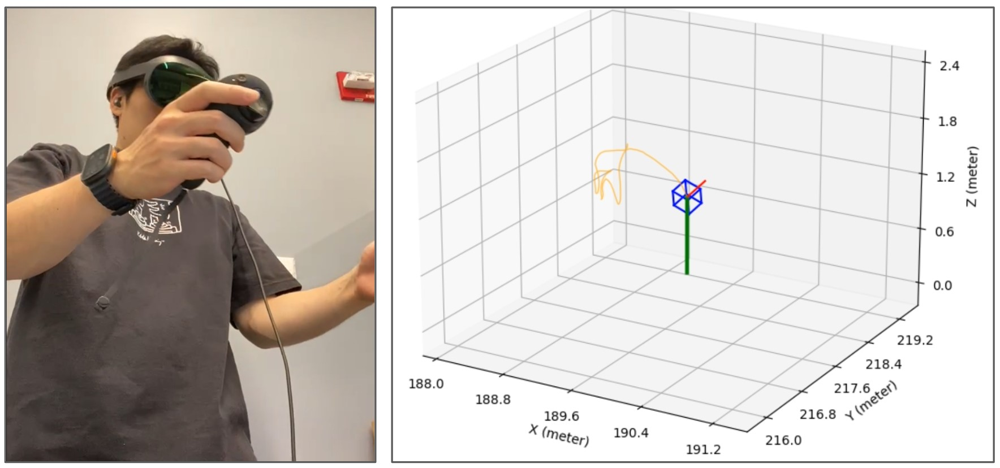
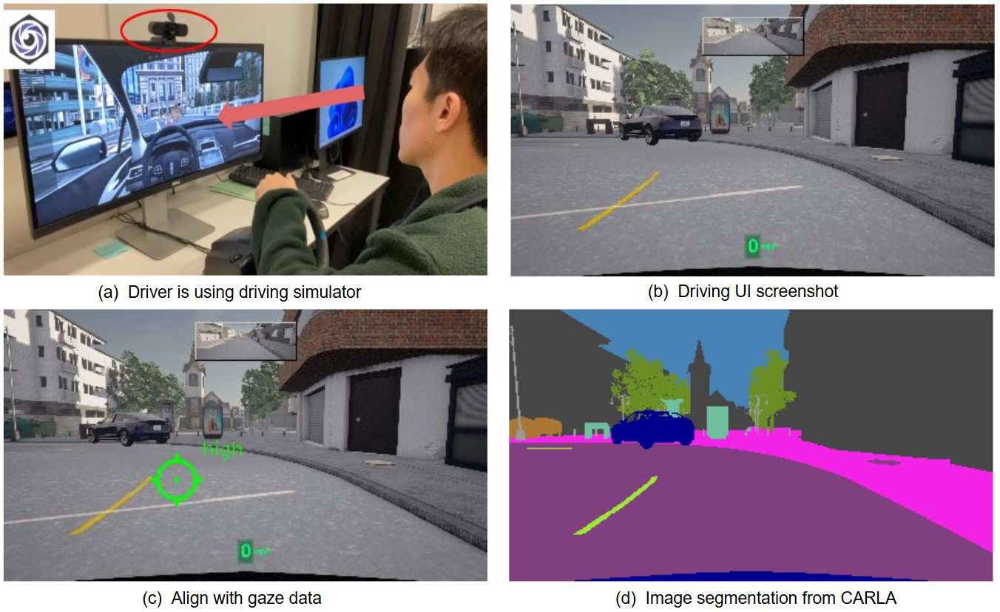
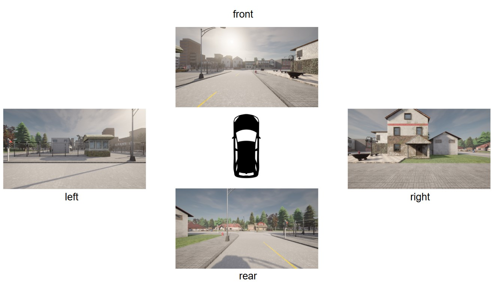
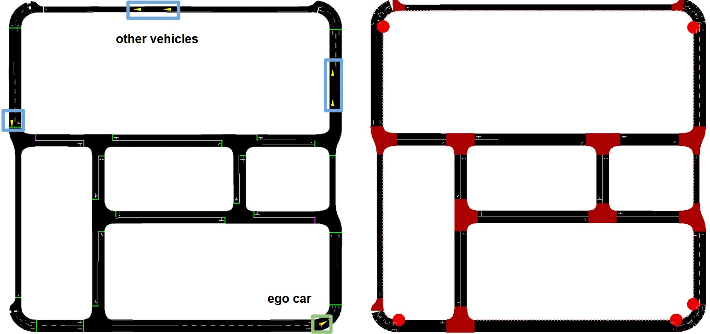
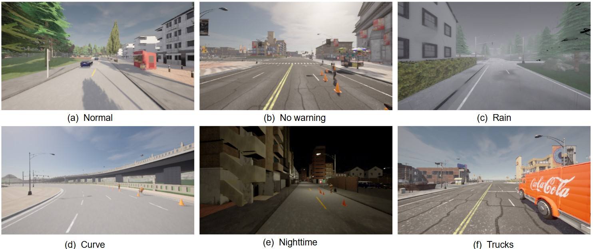
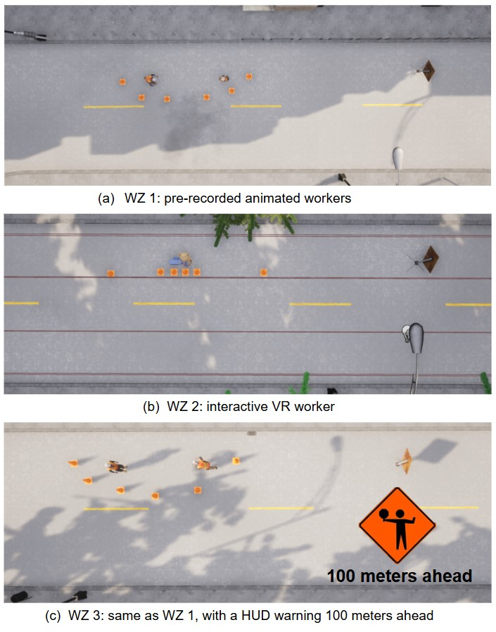
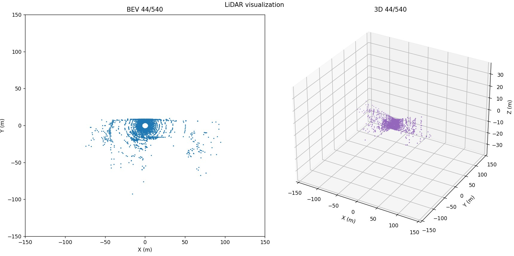
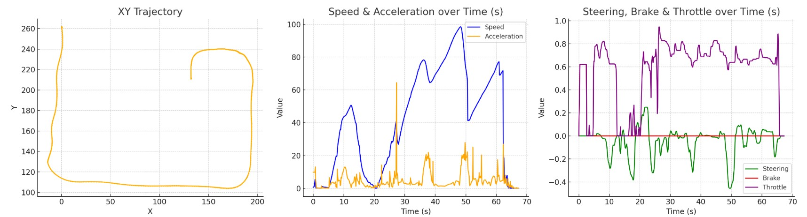

DUALSense
An Open-Source Dual-User VR Platform for
Driver–Worker Interaction with Multimodal Sensing

Abstract
Roadway work zone safety remains a critical challenge, as fatal crashes have continued to rise over the past decade. The behaviors of key road users—particularly drivers and on-site workers—are still poorly understood, largely due to the difficulty of capturing natural interactions in high-risk environments. To address this gap, we present DUALSense, an open-source virtual reality platform that supports dual-user interaction between a driver and a VR-based worker, enabling multimodal data collection in realistic construction-zone scenarios. The platform records worker motion and gaze, driver gaze behavior, as well as vehicle-centric data including trajectories, RGB images, LiDAR point clouds, and kinematic states. It further supports rapid and extensible scenario configuration, including traffic generation, weather and lighting variations, and worker behaviors derived from real human motion. A usability study (N=34) demonstrates that the platform supports naturalistic driving interactions with minimal discomfort, validating its suitability for roadway safety research and future autonomous-driving extensions.
01
VR-Worker Module
Full-body movement, object interaction, and 3D trajectory capture.

02
Driver Interface
Steering-wheel control, driving UI, and gaze aligned with screen-space semantics.

VIDEO DEMOVR worker × driver interaction and data collectionVideo forthcoming
03
Sensor Data Collection
Surround-view cameras, LiDAR, and vehicle-state logging.

04
Asynchronous CARLA–SUMO Co-Simulation
Human-driven ego vehicle in CARLA, surrounding traffic in SUMO.

SUMO traffic statesBidirectional exchange · 20 HzCARLA ego-vehicle position
05
Scenarios & Work-Zone Types
Six driving scenarios and three worker / warning configurations.


VIDEO DEMOScenario environments and work-zone configurationsVideo forthcoming
06
Multimodal Visualization
From point clouds to trajectories, vehicle dynamics, and human controls.


VIDEO DEMOMultimodal data visualizationVideo forthcoming
Research Resources
Editable Source Assets
Unreal project, custom assets, CARLA modifications, and build instructions. Download forthcoming.
07
System Design
Unreal VR, CARLA PythonAPI, SUMO, and asynchronous multimodal collection.